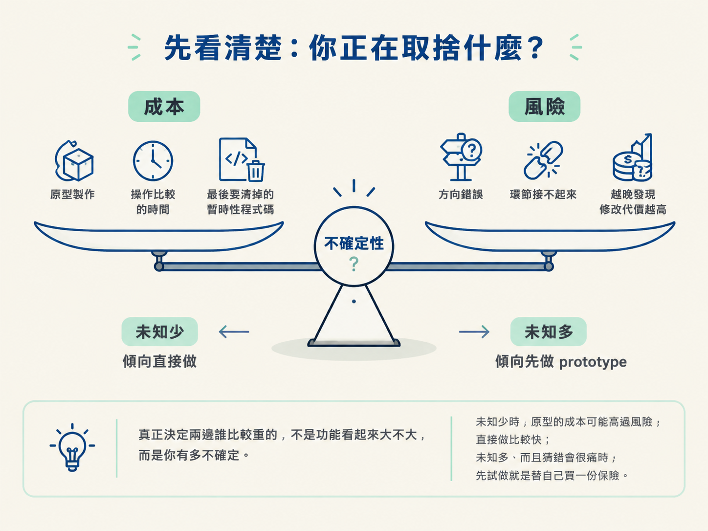
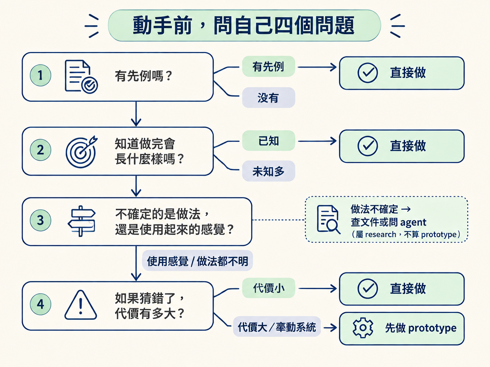
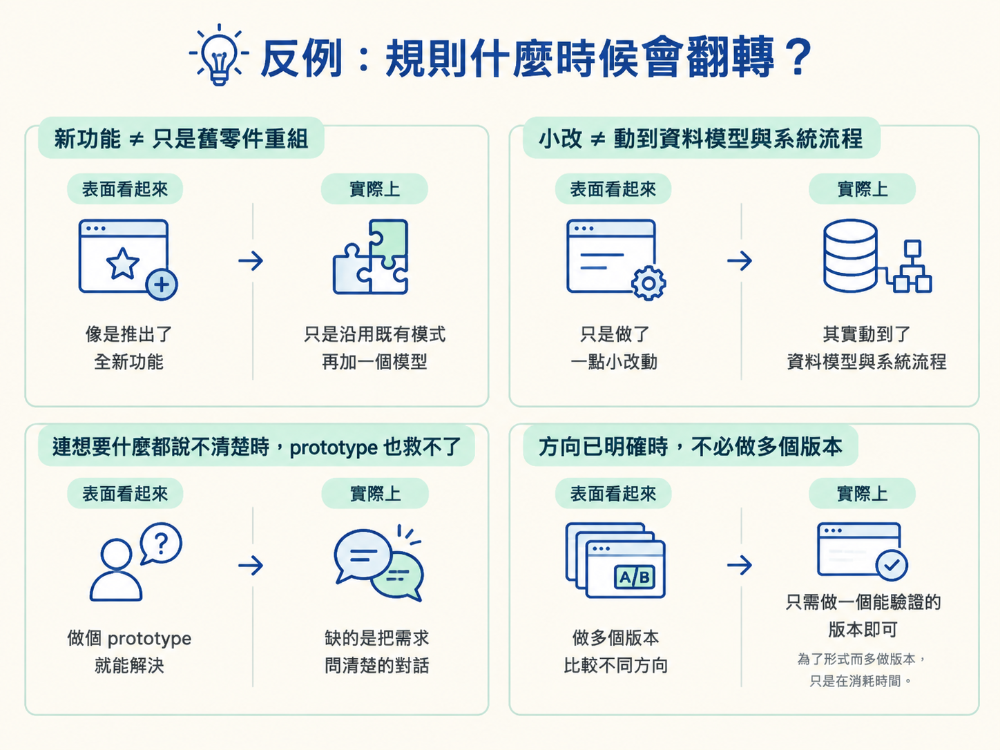

上一節我們看到，prototype 能把文字規劃裡藏著的盲區逼出來。但這不代表每件事都要先做原型。若只是把按鈕文字從「儲存」改成「確定」，也要先拉一個 prototype，反而像是為了過馬路而先蓋一座橋。
這一節要練習的是另一個判斷：眼前這件事的未知有多少？如果猜錯，代價又有多大？多數工作不需要原型；但遇到真正的不確定時，先花一點時間試做，往往能省下後面很多來回修改。
該不該做 prototype，就是在成本跟風險之間取捨。
一邊是成本。原型需要時間製作，也需要時間操作和比較，最後還可能留下必須清掉的暫時性程式碼。
另一邊是風險。如果方向錯了，或某個環節其實根本接不起來，越晚發現，修改的代價就越高。
真正決定兩邊誰比較重的，不是功能看起來大不大，而是你有多不確定。未知少時，原型的成本可能高過風險，直接做比較快；未知多、而且猜錯會很痛時，先試做就是替自己買一份保險。

| 工作類型 | 判準 | 該不該做 prototype | 例子 |
|---|---|---|---|
| 全新功能，沒有先例 | 做完會長什麼樣，現在還說不準 | 該做 | 第一次做即時連線、全新的互動流程 |
| 接沒用過的服務或套件 | 不知道它的限制與實際使用感受 | 該做 | 試用 Ably、PartyKit 這類即時服務 |
| 要挑前端設計方向 | 幾個方向都做得到，但差在使用感受 | 該做 | 同一頁做幾個差異很大的版本來比較 |
| 重新設計整個系統 | 會動到資料模型與既有流程 | 很該做 | 把整套編輯流程換掉 |
| 修 bug，想要的行為已知 | 正確行為已經有明確答案 | 不用 | 下拉選單按下去應該要關閉 |
| 擴充既有功能 | 只是重新組合已經存在的零件 | 不用 | 在已經有的一百個模型裡再加入一個 |
表格裡最容易被忽略的是最後兩列。修 bug 通常不需要 prototype，因為你不是在探索「應該做成什麼樣子」，而是要把已經定義好的行為修正回來。這時需要的是測試，不是原型。
既有功能的擴充也一樣。系統裡的零件已經存在，而且都被用過，你只是用熟悉的方式重新組合它們，未知通常很少。即使需求裡出現「新模型」或「新格式」，也不代表一定要做 prototype。
實際工作時，你不需要把整張表逐格比對。先用下面四個問題，把不確定性篩出來。
第一問：這件事有先例嗎？你是否做過類似的東西？程式庫裡是否已經有可用的零件？如果答案是「有」，通常代表未知不多，可以直接開始做。
第二問：我知道做完會長什麼樣嗎？如果你能清楚描述成品，通常不太需要 prototype。相反地，如果你只能說「大概是這個方向」，卻說不出實際畫面或互動，那就值得先把方向做出來看看。
第三問：我不確定的是做法，還是使用起來的感覺？如果你只是還不知道某個 API 怎麼用、某個服務有哪些限制，那屬於 research 的問題，可以查文件或詢問 agent。prototype 要處理的是另一種不確定：做出來之後會不會好用、順不順、互動是否合理。
第四問：如果猜錯了，代價有多大？改一行文字和重做一套資料模型，代價完全不同。當未知很多，又可能牽動整個系統時，先做 prototype 通常值得；如果改錯只需要調整一小段，就不必為了小風險增加一個探索階段。

這套判斷很好用，但不能只看需求裡的字眼。以下幾種情況，常常會讓直覺失準。
看起來是新功能，其實只是舊零件的重組。使用者可能會說：「幫我加一個新模型。」聽起來像全新的功能，但如果系統裡已經有九十九個模型，這次只是沿用同一套模式再加一個。像「再支援一種登入方式」或「多加一個匯出格式」也一樣，先確認系統裡有沒有先例，不要被「新」這個字帶著走。
看起來只是小改，其實動到了骨頭。換個顯示方式或儲存位置，表面上可能只改幾行，但如果它會影響資料模型或整個系統流程，未知就不小，反而值得先做 prototype。判準就是你有多不確定，不是最後會改幾行程式碼。
連想要什麼都還說不清楚時，prototype 也救不了。如果 bug 單只寫著「這個行為怪怪的」，卻沒有人能說明「怪」究竟代表什麼，那目前缺的不是一個可操作的版本，而是一場把需求問清楚的對話。prototype 適合處理「知道想要什麼，但不確定做起來如何」，不適合處理「根本不知道想要什麼」。
設計已經明確時，不必硬做多個版本。prototype 很適合拿來比較幾個差異明顯的 UI 方向；但如果方向早就決定了，就做一個能驗證的版本即可。為了形式而多做幾個版本，只是在消耗時間。

判斷的關鍵是未知有多少，不是功能看起來多大。
有先例、知道成品會長什麼樣、只是組合現成零件，或正確行為已經定義清楚的工作，直接做就好。沒有先例、需要挑方向、要接新的服務，或會動到系統結構的工作，先做 prototype。
動手前問自己四句：有先例嗎？知道做完會長什麼樣嗎？不確定的是做法，還是使用起來的感覺？如果猜錯，代價大嗎？
知道什麼時候該做 prototype 之後，下一個問題就是：應該用什麼形式來做？下一節會比較兩個現成的分支：一個適合推演複雜的資料邏輯，另一個適合比較差異很大的 UI 方向，看看它們各自適合處理哪種不確定。